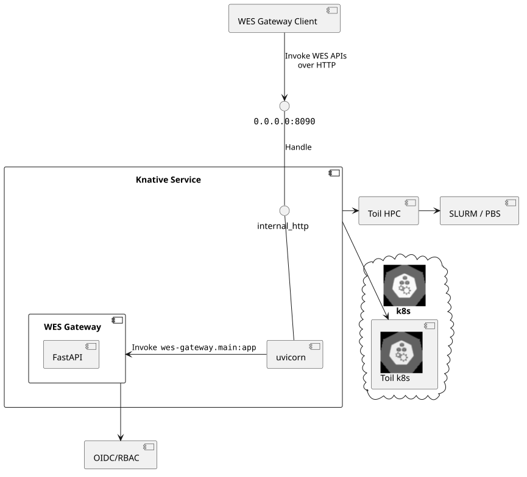
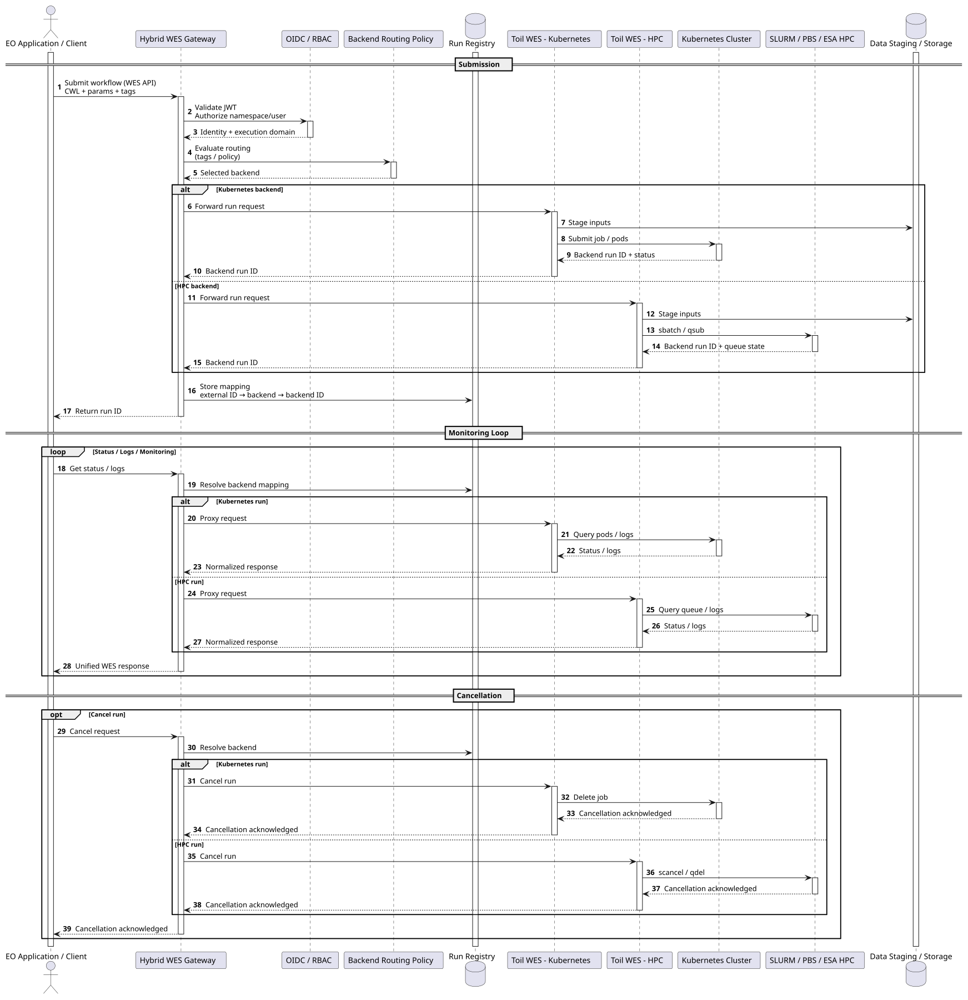

Architecture
WES API Gateway is the HTTP-facing WES implementation for workflow execution. It gives clients the standard GA4GH Workflow Execution Service shape while delegating workflow execution concerns to Toil.


Responsibility Split
The gateway is responsible for the API boundary:
- Present GA4GH WES endpoints under
/ga4gh/wes/v1. - Validate WES request fields and multipart attachments.
- Apply deployment concerns such as authentication, authorization, tenancy, routing, and policy.
- Return WES response models consistently to clients.
- Map execution state, logs, task data, and outputs back into WES objects.
Toil is responsible for workflow execution:
- Stage and run CWL, WDL, or supported Toil workflows.
- Manage workflow working directories, state stores, and job stores.
- Execute work locally, through Celery workers, or on supported infrastructure.
- Produce run state, stdout and stderr locations, task information, and outputs.
Toil's documentation describes its WES support and local service URL at http://localhost:8080/ga4gh/wes/v1. This project keeps that WES contract as the external API and uses Toil as the runner behind it.
Source Code Anatomy
The repository is intentionally small:
schemas/openapi.jsoncontains the WES OpenAPI schema.Taskfile.yamldownloads the upstream schema, generates API docs, and generates the FastAPI skeleton.src/wes_api_gateway/main.pydefines the FastAPI app and route functions.src/wes_api_gateway/models.pydefines Pydantic models generated from the schema.docs/c4/components/OpenAPI/apidoc.htmlis generated from the OpenAPI schema.
The route functions in main.py are the handoff points from HTTP into the Toil-backed execution layer. For example, run_workflow accepts workflow attachments and returns a RunId; the implementation behind that route should submit the request to the Toil runner and persist enough metadata to serve later status, log, task, and cancellation requests.
Request Flow
- A client submits
POST /runswith WES form fields. - The gateway authenticates and validates the request.
- Attachments are staged safely. Relative
workflow_urland input references are resolved against those staged files. - The gateway passes the workflow request and approved engine parameters to the Toil workflow runner.
- Toil starts the workflow and returns or records an execution identifier.
- The gateway returns a WES
run_id. - Later calls to
/runs/{run_id},/runs/{run_id}/status,/runs/{run_id}/tasks, and/runs/{run_id}/cancelread or update Toil-backed run state and present it as WES responses.
State Mapping
WES clients consume a small state vocabulary: QUEUED, INITIALIZING, RUNNING, COMPLETE, EXECUTOR_ERROR, SYSTEM_ERROR, CANCELING, CANCELED, PREEMPTED, PAUSED, and UNKNOWN.
The gateway should translate Toil runner state into this vocabulary. That keeps client behavior stable even if the underlying runner, queue, or infrastructure reports more detailed internal states.
Why A Gateway
Using a gateway on top of Toil separates client compatibility from execution mechanics:
- WES clients see one stable API.
- EOEPCA deployment concerns can be handled at the boundary.
- Toil can evolve independently behind the WES contract.
- API docs, generated schemas, and integration tests can target the standard WES surface.
This separation is also why the documentation follows Diataxis. Users learning the API need a tutorial, operators and client authors need how-to guides, implementers need precise reference material, and maintainers need the architectural explanation.